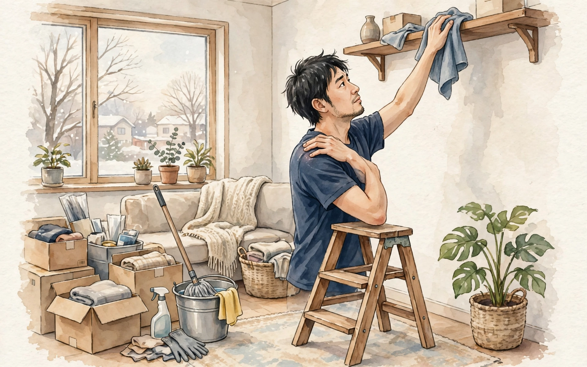

東三国で年末の大掃除の後に気になる肩こり
男性の要因整理とセルフケア、受診の目安

「大掃除で高い棚を拭いた日の夜から、肩が重く張って腕が上げにくい」「家具を動かした翌朝、肩まわりがこわばって着替えるときに気になる」東三国や新大阪、淀川区周辺で暮らす男性から、年末の大掃除の前後に、肩にまつわる声を聞くことがあります。大掃除の後に感じる肩こりの感じ方や背景は人によって異なります。この記事では、年末の大掃除の後に気になる肩こりについて、一般的な考え方と、考えられる要因、掃除の進め方とセルフケア、受診の目安をまとめます。年末の準備全般や腰の重さに絞った記事とは視点を分け、ここでは「年末の大掃除の後」という場面と「肩こり」に焦点を当てます。
年末の大掃除と、肩こりとは：腕を上げる作業が重なる日の肩まわりの重さと張り
一般に「肩こり」とは、首の付け根から肩、肩甲骨まわりにかけて重だるい、張る、こわばる感じがする、などとして自覚されることが多いとされています。年末の大掃除は、換気扇や照明、高い棚の拭き掃除、家具の移動、片づけや仕分けなど、ふだんまとめて行うことの少ない作業が一日や数日に集中しやすい行事です。「掃除の最中は夢中で気づかなかったのに、終わってから肩の張りを意識した」など、出方は人それぞれです。「どんな作業をした日か」「夜と翌朝のどちらで強いか」「片方の肩だけか、両肩か」を自分の言葉で整理しておくと、掃除の進め方の見直しや専門家への相談の際に役立ちます。
考えられる要因の整理
年末の大掃除の後に肩こりを意識する背景には、当日の作業の条件と、冷えやふだんの運動量といった体の側の条件が重なっている場合があります。以下は考えられる要因の例です。当てはまるかどうかや程度は人によって異なります。
肩と肩甲骨まわりの位置は、図1のとおりです。

肩こりは、首の付け根から肩甲骨まわりにかけて自覚されることが多いとされます。位置は目安です。
- 高い場所の掃除で、腕を上げ続ける姿勢：換気扇や照明、高い棚の拭き掃除は、腕を上げたまま手を動かす姿勢が続きやすい作業です。場所を変えて繰り返すと、夕方に肩の張りを意識する方もいます。
- 重い家具・荷物の移動と、持ち上げる動き：家具の移動や荷物の入った段ボールなど、大掃除には重い物の上げ下ろしがつきものです。腕だけで持ち上げたり、肩に力が入ったまま運んだ日は、肩まわりへの負担が偏りやすいとされます。
- 脚立の上り下りと、体をひねる動き：高いところの作業では、脚立の上り下りに加え、体をひねったまま手を伸ばす姿勢も増えます。足場が不安定な姿勢が重なると、肩や首まわりに力が入ったままになりやすいです。
- 片づけの繰り返しと、同じ動きの積み重ね：しまう・出す・仕分けるといった片づけは、同じ側の腕ばかり使ったり、同じ動きを繰り返したりしやすいものです。一つひとつは軽い動きでも、部屋ごとに積み重なると夜に肩の重さを意識する方もいます。
- 一気に終わらせようとする、休憩の少なさ：「今日中に終わらせたい」と区切りなく作業を続けると、腕を上げる姿勢や同じ動きが長時間続きます。休憩を挟んだ日と挟まなかった日で、夜の肩の張りが違うとされます。
- 水仕事と換気による、肩まわりの冷え：12月は水仕事で手足が冷えやすく、換気で窓を開ける時間も増えます。薄着のまま作業を続けた日は、肩まわりが冷えてこわばりやすいとされます。
- 肩そのものや、体そのものの側の要因の可能性：肩こりの背景には、肩まわりの関節や筋肉の状態、これまでの肩の不調の経過、ほかの病気が関わる場合もあります。「大掃除をしたからだろう」と決めつけないことが大切です。
大掃除の進め方と、日常で試せるセルフケア
掃除の最中や、掃除のあとに試せるものをまとめました。強い力で押したり、肩を急に大きく回したりはせず、痛みやしびれがあるときは無理をしないでください。気になる様子が強いときは、セルフケアより先に医療機関への相談をご検討ください。
- 指先を肩にのせて、肘で大きく円を描く：両手の指先を肩にのせ、肘でゆっくり大きく円を描くように回す動きです（手順は図2）。前回しと後ろ回しを数回ずつ、呼吸に合わせて行います。痛みや引っかかりを感じるときは無理をしないでください。
- 首をゆっくり横に倒して、肩と首まわりを伸ばす：頭を片側へゆっくり倒し、反対側の肩と首まわりの伸びを感じる範囲で保ちます。手で頭を強く引っ張らず、左右同じように行います。
- 蒸しタオルや湯船で、肩まわりを温める：掃除のあとはシャワーで済ませず、ぬるめのお湯に浸かって肩まわりまで温めましょう。蒸しタオルは熱すぎない温度で、気持ちよい範囲にとどめます。のぼせやすい方は長湯を避けてください。
- 掃除は20〜30分で区切り、姿勢を変える：タイマーを使う、部屋や作業を切り替えるなど、腕を上げる作業が続く時間を区切ります。区切りで一度腕を下ろして肩を回し、首をゆっくり動かすだけでも、同じ姿勢の続く時間を分けられます。
- 高い場所は脚立の高さを合わせ、無理に背伸びしない：高い棚や照明の作業では、脚立の高さを合わせ、つま先立ちで腕を伸ばし続けないことです。届きにくい場所は、持ち手の長い道具を使う、別の日に分けるのも選択肢です。
- 重い物は体に近づけ、両手で分けて持つ：段ボールや家具を持つときは、物に体を近づけ、両手で分けて持つ形が、片方の肩だけに頼らない持ち方とされます。一度に運ぶ量を分けたり、二人で持ったりすることも、負担の見直しになります。
- 終わらない分は翌日に分け、夜は睡眠を優先する：大掃除を一日で終えようとせず、残りを翌日や別の日に分けることです。その日の夜は入浴と睡眠を優先し、翌朝の肩の様子を見ながら続けましょう。
肩回しの手順の目安は、図2のとおりです。

①両手の指先を肩にのせる ②肘で円を描くように回す ③前回し・後ろ回しを数回ずつ行います。痛みや引っかかりを感じるときは無理をしないでください。
セルフケアは一度に全部をやろうとせず、続けられそうなものを一つ選ぶところから始めるのがおすすめです。感じ方には個人差があり、その日の作業や気温によっても変わります。無理のない範囲で行ってください。市販薬などを使う場合は、用法・用量や対象を商品の表示で確認してください。
医療機関への受診を考える目安
次のような様子がある場合は、セルフケアや当院でのケアの前に、整形外科など医療機関への相談をご検討ください。当院は医療機関ではなく、症状の診断や治療は行いません。「大掃除の疲れだろう」と思っていても、ほかの原因の場合があります。腕が上がりにくい、しびれを伴う場合は、早めの相談が大切です。
- 腕が上がりにくい、上げると肩に強い痛みを感じる
- 手や指のしびれを伴う、腕に力が入りにくい感じがある
- 肩の強い痛みが続く、だんだん強くなる
- 転倒したり、肩を強く打ったあとから、痛みや重さが続いている
- 発熱を伴う、安静でも様子が強くなっていく
- セルフケアを続けても数週間以上様子が変わらない
上記に当てはまらなくても、気になる様子が続くときは早めに相談することが大切です。
北辰堂のご案内
北辰堂は、大阪市淀川区東三国二丁目にある男性専用の整体院です。施術歴30年の平賀伸人（鍼灸師・国家資格）が、整体とリラクゼーションを行います。当院では鍼灸施術は行いません。営業は平日・土曜17:00〜22:00、日曜10:00〜22:00の完全予約制です。年末の大掃除の後に肩こりが気になる方は、仕事帰りの平日・土曜の夕方や、日曜の時間帯に、大掃除でどんな作業が多かったかも含めてご相談いただけます。プライバシーへの配慮のため、詳しい住所はご予約確定後にLINEでご案内します。
料金は60分 初回2,000円／2回目以降6,000円、90分 初回3,000円／2回目以降9,000円で、お支払いは現金のみです。施術を受けたからといって体の状態がどうなるかをお約束することはできませんが、その日の体の状態を確認しながら、肩まわりだけでなく首や背中、姿勢全体の様子も見て、ゆっくり体を預けられる時間をご用意しています。大掃除の進め方や、ふだんの体の使い方など、日常で気になっていることも、カウンセリングの際にお聞かせください。
コースの内容はメニュー・料金、施術者は施術者について、ご予約の流れは当日の流れとLINE予約の下書きづくり、場所についてはアクセスをご覧ください。よくある質問もご参考ください。
ほかのコラム記事
関連するお悩みページ
ご予約・ご相談はLINEから
東三国・新大阪・淀川区周辺で、体のケアの相談先をお探しの方は、LINE公式アカウント（北辰堂）からお気軽にご連絡ください。現在の状態をお聞きしたうえで、施術の進め方をご案内します。
LINEで予約する